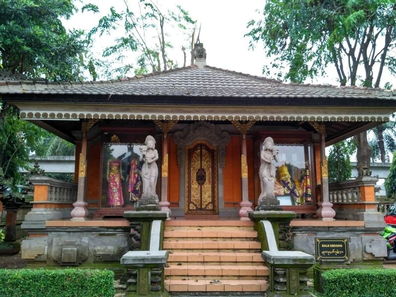
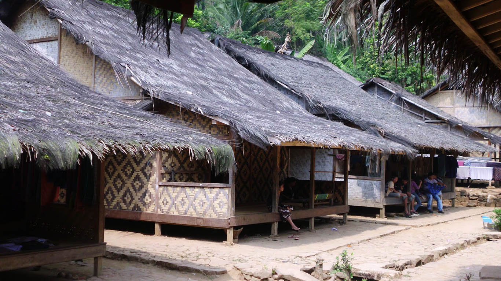
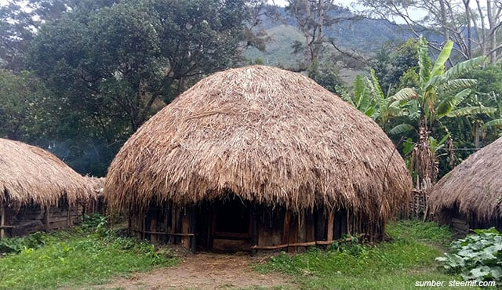
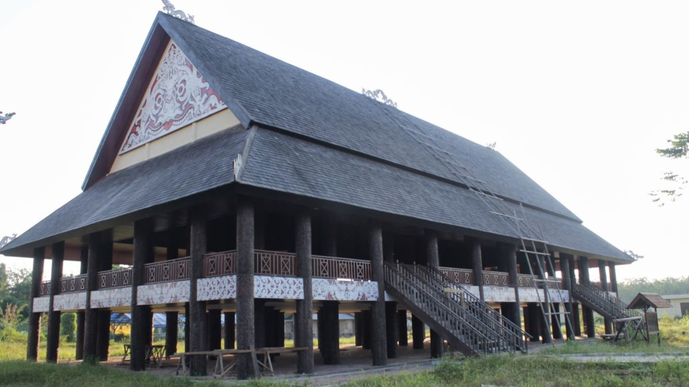
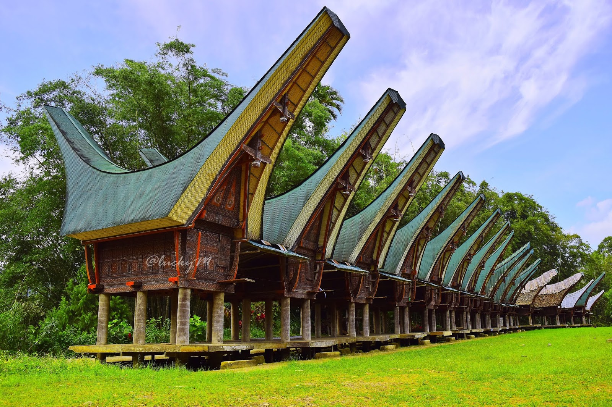
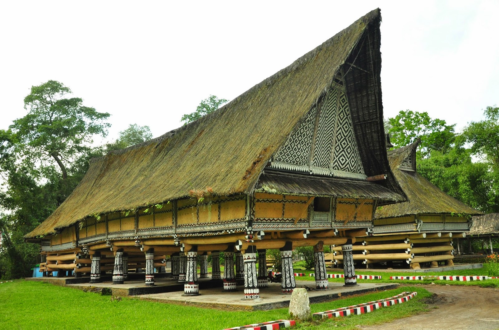

Mengenal Rumah Adat Nusantara
Indonesia merupakan negara kepulauan yang kaya akan budaya dan tradisi. Salah satu warisan budaya yang penting adalah rumah adat, yang mencerminkan identitas dan kearifan lokal masyarakat di berbagai daerah. Rumah adat tidak hanya berfungsi sebagai tempat tinggal, tetapi juga memiliki nilai filosofis, sosial, dan budaya. Setiap rumah adat dirancang berdasarkan kondisi geografis dan kebutuhan masyarakat setempat, sehingga memiliki bentuk dan struktur yang beragam.
     
Berbagai rumah adat di Nusantara memiliki ciri khas yang unik. Misalnya, Rumah Bolon dari Sumatra Utara yang merupakan rumah adat suku Batak, berbentuk rumah panggung besar dengan ukiran khas dan mencerminkan kebangsawanan. Sementara itu, Rumah Tongkonan dari Sulawesi Selatan memiliki atap melengkung menyerupai perahu, melambangkan hubungan erat dengan nenek moyang dan digunakan dalam upacara adat. Selain itu, Rumah Lamin dari Kalimantan Timur dikenal sebagai rumah panggung panjang yang dapat menampung banyak keluarga dalam satu bangunan, mencerminkan kehidupan komunal suku Dayak.
Tidak hanya di dataran rendah, rumah adat juga berkembang di daerah pegunungan dan pedalaman. Rumah Honai dari Papua, misalnya, dibangun dengan bentuk bundar dan atap jerami untuk menahan suhu dingin di dataran tinggi. Sementara itu, Rumah Baduy dari Banten terbuat dari bahan alami seperti bambu dan ijuk, mencerminkan kehidupan sederhana masyarakat Baduy yang menjaga kelestarian alam. Di Bali, terdapat Rumah Gapura Candi Bentar yang berfungsi sebagai pintu masuk ke area rumah atau pura, mencerminkan filosofi keseimbangan dalam budaya Hindu Bali.
Keberagaman rumah adat ini menunjukkan bagaimana masyarakat Indonesia menyesuaikan arsitektur dengan lingkungan dan budaya mereka. Di daerah pesisir, rumah adat biasanya berbentuk panggung untuk menghindari banjir, seperti Rumah Lamin. Sementara itu, di daerah pegunungan, rumah adat dibuat dengan bahan yang dapat menahan cuaca dingin, seperti Rumah Honai. Hal ini membuktikan bahwa rumah adat bukan hanya simbol budaya, tetapi juga hasil adaptasi masyarakat terhadap kondisi alam.
Melestarikan rumah adat adalah tanggung jawab bersama agar warisan budaya ini tidak punah. Di era modern, banyak rumah adat yang sudah jarang ditempati dan digantikan oleh bangunan modern. Oleh karena itu, upaya pelestarian seperti museum budaya, festival adat, dan pembangunan replika rumah adat sangat penting dilakukan. Dengan mengenal dan menjaga rumah adat Nusantara, kita turut serta dalam mempertahankan identitas bangsa yang kaya dan beragam.